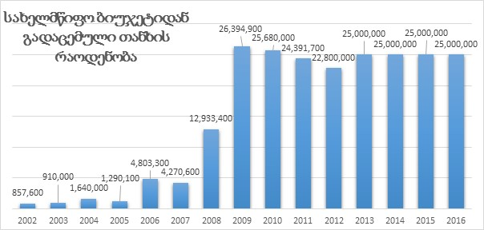
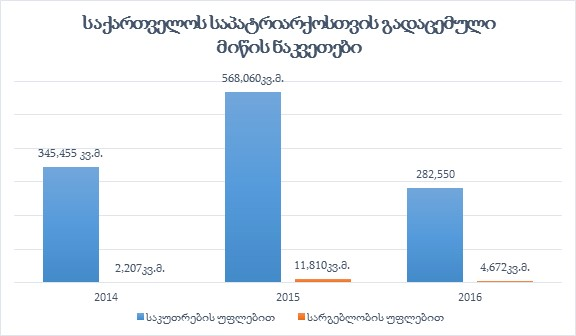
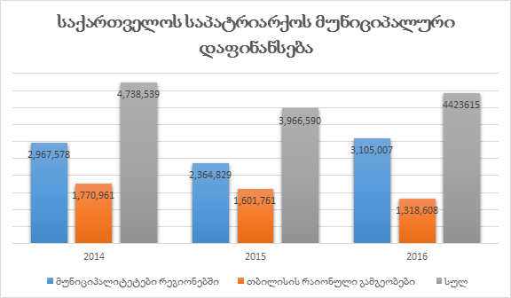
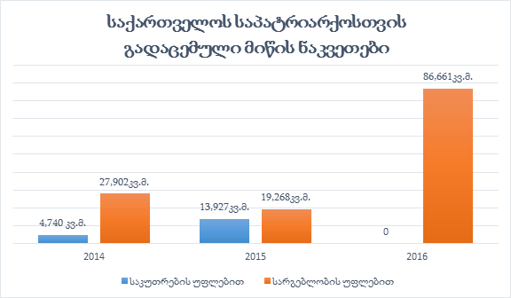

რელიგიური ორგანიზაციების სახელმწიფო დაფინანსების პოლიტიკა და პრაქტიკა (2015-2016)
ზოგადი მიმოხილვა
საქართველოში რელიგიური ორგანიზაციების დაფინანსების არსებული სისტემა რელიგიასა და სახელმწიფოს შორის კონსტიტუციური ურთიერთგამიჯვნის პრინციპის დარღვევად შეიძლება შეფასდეს. სახელმწიფო დაფინანსების დიდ ნაწილს საქართველოს სამოციქულო ავტოკეფალური მართლმადიდებელი ეკლესია (შემდგომში „მართლმადიდებელი ეკლესია“) და მის მიერ დაფუძნებული იურიდიული პირები იღებენ. მიუხედავად იმისა, რომ სახელმწიფო 2002 წლიდან საქართველოს საპატრიარქოსთვის გადაცემულ ფინანსურ და ქონებრივ რესურსს საბჭოთა პერიოდში მიყენებული ზიანის ანაზღაურებას უწოდებს, არსებული პრაქტიკა წარმოადგენს ეკლესიის სუბსიდირებას და არა საბჭოთა პერიოდში მიყენებული ზიანის კომპენსაციას.
გარდა ცენტრალური საბიუჯეტო ტრანსფერისა, საქართველოს პრეზიდენტისა და საქართველოს მთავრობის სარეზერვო ფონდები, აჭარის ავტონომიური რესპუბლიკის მთავრობა, ადგილობრივი თვითმმართველობები, ასევე პრეზიდენტი და მთავრობა ინდივიდუალური აქტებით, წლების განმავლობაში გადასცემენ საქართველოს საპატრიარქოს სხვადასხვა სახის მატერიალურ სიკეთეს.
2014 წლიდან სახელმწიფომ დაიწყო დამატებით ოთხი რელიგიური ორგანიზაციის სახელმწიფო დაფინანსებაც. „რელიგიური გაერთიანებებისათვის საბჭოთა ტოტალიტარული რეჟიმის დროს მიყენებული ზიანის ნაწილობრივ ანაზღაურებასთან დაკავშირებული ზოგიერთი ღონისძიების განხორციელების წესის დამტკიცების თაობაზე“ საქართველოს მთავრობის 2014 წლის 27 იანვრის (#117) დადგენილების საფუძველზე, მუსლიმ, იუდეურ, რომაულ-კათოლიკურ და სომეხთა სამოციქულო ქრისტიანულ თემებს ზიანის ანაზღაურების მიზნით ყოველწლიურად გამოეყოფა დაფინანსება. აღნიშნული ცვლილება მთავრობამ შეაფასა, როგორც რელიგიური გაერთიანებების თანასწორუფლებიანობის დაცვისკენ წინ გადადგმული ნაბიჯი, თუმცა, რეალურად, დაფინანსების ეს მოდელიც კონფესიათა დისკრიმინაციული შერჩევის კრიტერიუმებს დაეფუძნა და არსებული უთანასწორობა ვერ აღმოფხვრა. საქართველოს საპატრიარქოსგან განსხვავებით, რომლის დაფინანსებასაც სახელმწიფო კონსტიტუციური შეთანხმების საფუძველზე ამართლებს, სრულიად განსხვავებულია სახელმწიფოს პოლიტიკა ოთხი რელიგიური თემისთვის გამოყოფილი თანხების გაკონტროლებისა და ანგარიშვალდებულების ნაწილში. სახელმწიფო არ ამოწმებს, თუ როგორ იხარჯება მართლმადიდებელი ეკლესიისთვის გამოყოფილი ფინანსური სახსრები, თუმცა აკონტროლებს ოთხი რელიგიური გაერთიანებისთვის „სიმბოლური კომპენსაციის“ სახით გადაცემულ თანხებს.
რელიგიური გაერთიანებების დაფინანსების პოლიტიკა და პრაქტიკა ავლენს, ერთი მხრივ, სახელმწიფოს ლოიალურ და მიკერძოებულ დამოკიდებულებას დომინანტი კონფესიის მიმართ და, მეორე მხრივ, რელიგიურ უმცირესობათა ავტონომიაში ჩარევისა და მათი გაკონტროლების გაძლიერების ტენდენციას აჩვენებს.
საქართველოს სამოციქულო ავტოკეფალური მართლმადიდებელი ეკლესიისთვის გადაცემული მატერიალური სიკეთე და მიზნობრიობა
სახელმწიფოს მიერ რელიგიური ორგანიზაციებისთვის გადაცემული თანხის ყველაზე დიდი ნაწილი საქართველოს საპატრიარქოს გადაეცემა. თანხა მოიცავს ცენტრალური და ადგილობრივი ხელისუფლების მიერ გამოყოფილ ფინანსურ სახსრებს და დაფინანსებაში ზრდის დინამიკა შეიმჩნევა. კერძოდ, 2013 წელს საქართველოს საპატრიარქოს დაფინანსებამ შეადგინა 29,220,349.7 ლარი; 2014-ში _ 32,019,399; 2015-ში _ 31,153,900 ლარი; 2016 წელს, TDI-ის მონაცემებით, დაფინანსება შეადგენს 30,201,015 ლარს[1].
საქართველოს საპატრიარქო სახელმწიფოსგან იღებს ასევე დიდი მასშტაბის უძრავ ქონებას _ მიწის ნაკვეთებსა და შენობა-ნაგებობებს.
სსიპ „საჯარო რეესტრის ეროვნული სააგენტოს“ მონაცემების თანახმად, 2015 წლის 31 დეკემბრის მდგომარეობით, საქართველოს საპატრიარქოს საკუთრებაშია 565 მიწის ნაკვეთი, ჯამური ფართობით 16 742 987.82 კვმ (1674.3 ჰა).
2017 წელს, საჯარო რეესტრმა TDI-ს აღნიშნული ინფორმაცია ამჟამინდელი მდგომარეობით საქართველოს საპატრიარქოს კუთვნილ ქონებაზე არ მოგვაწოდა. საჯარო ინფორმაციის გაცემაზე უარს TDI ასაჩივრებს თბილისის საქალაქო სასამართლოში.
ცენტრალური საბიუჯეტო დაფინანსება
საქართველოს საპატრიარქოს დაფინანსებაში ყველაზე დიდი წილი ცენტრალური ბიუჯეტიდან ყოველწლიურ ტრანსფერზე მოდის. 2002 წლიდან 2016 წლის ჩათვლით, რელიგიურმა ორგანიზაციამ ცენტრალური სახელმწიფო ბიუჯეტიდან ჯამში 226 მილიონამდე ლარი მიიღო. 2009 წლიდან 2013 წლამდე ყოველწლიურად გამოყოფილი თანხები 22-დან 27 მილიონამდე მერყეობდა, ხოლო 2013 წლიდან სახელმწიფო ბიუჯეტი საპატრიარქოს დაფინანსებისათვის სტაბილურად 25 მილიონს ითვალისწინებს.

მთავრობის მიერ გადაცემული თანხა და უძრავ-მოძრავი ქონება
2016 წელს „ტოლერანტობისა და მრავალფეროვნების ინსტიტუტმა“ (TDI) საქართველოს მთავრობის ადმინისტრაციას მიმართა წერილით, რომლითაც ითხოვდა ინფორმაციის მიწოდებას მთავრობის სარეზერვო ფონდიდან ან/და მთავრობის ბიუჯეტიდან საქართველოს საპატრიარქოსა და სხვა რელიგიური გაერთიანებებისთვის მატერიალური ქონების გადაცემის თაობაზე. საქართველოს მთავრობის ადმინისტრაციამ TDI-ის წერილი გადაამისამართა ეკონომიკური განვითარებისა და ფინანსთა სამინისტროებში. თავის მხრივ, ეკონომიკის სამინისტრომ აღნიშნული ინფორმაციის მომზადება დაავალა სსიპ „სახელმწიფო ქონების სააგენტოს“. სააგენტომ მიაწოდა TDI-ის ინფორმაცია მთავრობის მიერ საპატრიარქოსა და სხვა რელიგიური პირებისთვის გადაცემული მოძრავი და უძრავი ქონების შესახებ, თუმცა მთავრობის სარეზერვო ფონდიდან რელიგიური გაერთიანებებისთვის გადაცემული ფინანსური სახსრების შესახებ საჯარო ინფორმაციის მიღება ვერ მოხერხდა.
- 2016 წლის 5 მაისის საქართველოს მთავრობის #784 განკარგულების საფუძველზე, სამების საკათედრო-საპატრიარქო ტაძარში გაჩენილი ხანძრის შედეგად დაზიანებული ინფრასტრუქტურის რესტავრაცია _ აღდგენისა და მასთან დაკავშირებული ხარჯების დაფინანსების მიზნით საქართველოს ფინანსთა სამინისტრომ „საქართველოს 2016 წლის სახელმწიფო ბიუჯეტის შესახებ“ კანონით გათვალისწინებული მთავრობის სარეზერვო ფონდიდან საქართველოს საპატრიარქოს გამოუყო 3,737,400 ლარი[2]. თუმცა 2016 წლის 30 დეკემბრის განკარგულებით ინფრასტრუქტურის რესტავრაციისთვის გამოყოფილი თანხა 3 მილიონით შემცირდა და 737,400 ლარი შეადგინა[3].
- 2015 წელს საქართველოს მთავრობის სარეზერვო ფონდიდან საპატრიარქოს მიერ დაფუძნებულ იურიდიულ პირებს ჯამში გამოეყოთ 1,590, 000 ლარი. 2014 წელს საქართველოს საპატრიარქოს სასწავლო დაწესებულებებისა და საგანმანათლებლო ცენტრების რელიგიური საგანმანათლებლო საქმიანობისთვის ჯამში 1,542,000 ლარი გამოეყო.
- 2013 წელს მთავრობის სარეზერვო ფონდიდან პატრიარქის აღსაყდრების დღესთან დაკავშირებით 270,000 ლარი დაიხარჯა.
გარდა ფულადი დახმარებისა, საქართველოს მთავრობა მართლმადიდებელ ეკლესიას გადასცემს სხვადასხვა სახის მატერიალურ სიკეთეს: ავტომობილებს, ავტობუსებსა და სხვა ნივთებს. უმრავლეს შემთხვევაში, გადაცემული ქონების ღირებულება არ არის შეფასებული[4].
მართლმადიდებელი ეკლესია სახელმწიფოსგან საკუთრებისა და სარგებლობის ფორმით ყოველწლიურად იღებს ათეულობით უძრავ ქონებას. საპატრიარქოს სიმბოლური 1 ლარის გადახდის სანაცვლოდ ან სრულიად უსასყიდლოდ საკუთრებაში გადაეცემა არა მხოლოდ ის მიწის ნაკვეთები, რომლებიც მის ისტორიულ საკუთრებას წარმოადგენდა, არამედ სახელმწიფოს საკუთრებაში რეგისტრირებული სხვა მიწის ნაკვეთებიც.
- 2016 წელს მართლმადიდებელ ეკლესიას გადაეცა 20 მიწის ნაკვეთი, საერთო ფართობით 287,222 კვმ, მათ შორის, უსასყიდლოდ, საკუთრების უფლებით _ 282,550 კვმ, ხოლო სარგებლობის უფლებით (უზუფრუქტის ან აღნაგობის ფორმით) _ 4,672კვმ. ასევე, მოძრავი ქონების სახით მართლმადიდებელ ეკლესიას გადაეცა სასოფლო-სამეურნეო დანიშნულების ტექნიკა _ ტრაქტორი და 10,000 ტუფის ქვა.
- 2015 წელს მართლმადიდებელ ეკლესიას საკუთრების უფლებით გადაეცა 21 მიწის ნაკვეთი, საერთო ფართობით 568,060 კვმ. 2014 წელს საქართველოს საპატრიარქოს პირდაპირი მიყიდვის წესით, სიმბოლურ ფასად, 1 ლარად, საკუთრების უფლებით გადაეცა 27 მიწის ნაკვეთი, საერთო ფართობით 345454.83 კვმ. რაც შეეხება სარგებლობა/უზუფრუქტით გადაცემულ ქონებას, საპატრიარქოს 2015 წელს გადაეცა 1 უძრავი ნივთი, საერთო ფართობით, 11810.00 კვმ, ხოლო 2014 წელს _ 1 უძრავი ნივთი, საერთო ფართობით, 2207 კვმ.
აღსანიშნავია, რომ სახელმწიფო არ აფასებს აღნიშნული უძრავი ქონების ღირებულებას და შესაბამისად, გადაცემული ქონების საბჭოთა პერიოდში მიყენებული ზიანის ანაზღაურებასთან კავშირში დაანგარიშება შეუძლებელია.

საქართველოს პრეზიდენტის სარეზერვო ფონდიდან გამოყოფილი დაფინანსება
საქართველოს პრეზიდენტის სარეზერვო ფონდიდან 2016 წელს მართლმადიდებელი ეკლესიისთვის გამოიყო 40,000 ლარი. აქედან 35,000 ლარით დაფინანსდა სასულიერო აკადემიისა და სემინარიის მიერ დაგეგმილი პროექტი „ქალები ქრისტიანული საქართველოს ისტორიაში“, ხოლო 5000 ლარი გამოიყო ილია II-ის აღსაყდრების ამსახველი დოკუმენტური ფილმის ტირაჟირებისა და საქართველოსა თუ უცხოეთში არსებულ ქართულ სათვისტომოებში მისი გავრცელებისთვის საჭირო ხარჯების დაფარვის მიზნით.
2015 წელს საქართველოს მართლმადიდებელი ეკლესიისა და სხვა რელიგიური ორგანიზაციებისთვის პრეზიდენტის სარეზერვო ფონდს ფულადი სახსრები არ გაუცია. 2014 წელს საქართველოს საპატრიარქოს იურიდიულ პირებსა და მის ბენეფიციარებს გადაეცა 108,000 ლარი. თანხა, ძირითადად, სოციალური პროექტებისთვის იყო განკუთვნილი.
2013 წელს სარეზერვო ფონდიდან ფოთის საკათედრო ტაძრისთვის გაიცა 339,500 ლარი. დაფინანსება მოიცავდა როგორც მშენებლობისთვის საჭირო თანხას, ასევე ფარავდა ტაძრის კურთხევასთან დაკავშირებული სადღესასწაულო მსახურების, საინფორმაციო-სარეკლამო რგოლის დამზადების, ტელეეთერში განთავსებისა და დაგეგმილ ღონისძიებაზე მგზავრთა ტრანსპორტირების ხარჯებს.
პრეზიდენტის სარეზერვო ფონდების ანალიზი აჩვენებს, რომ პრეზიდენტის ინსტიტუტის შესუსტების შემდეგ, ეკლესიისთვის ფონდიდან გაცემულმა თანხის ოდენობამ მნიშვნელოვნად იკლო. მაგალითად, 2007-2013 წლებში საქართველოს პრეზიდენტის სარეზერვო ფონდიდან მართლმადიდებელ ეკლესიას მთლიანობაში 10,806,207 ლარი გადაეცა, აქედან ყველაზე დიდი ოდენობის თანხა _ 5,484,800 ლარი, 2008 წელს გამოიყო.
აჭარის ავტონომიური რესპუბლიკის მთავრობის მიერ გადაცემული მატერიალური სიკეთე
ცენტრალური მთავრობის მსგავსად, საქართველოს საპატრიარქოს სხვადასხვა რესურსს გადასცემს აჭარის ავტონომიური რესპუბლიკის მთავრობაც.
- 2016 წელს აჭარის ავტონომიური რესპუბლიკის მთავრობას არც ერთი რელიგიური ორგანიზაციისთვის არ გადაუცია თანხა ან უძრავი/მოძრავი ქონება.
- 2015 წელს საქართველოს საპატრიარქოს მიერ დაფუძნებულ იურიდიულ პირს, შპს „ხარ-ფურს“, ბათუმისა და ლაზეთის მიტროპოლიტ დიმიტრის მიმართვის საფუძველზე, აჭარის ავტონომიური რესპუბლიკის საკუთრებაში არსებული, ქ. ქობულეთში მდებარე 249 909 კვმ სასოფლო-სამეურნეო დანიშნულების მიწის ნაკვეთი საინვესტიციო პირობების განხორციელების სანაცვლოდ, უსასყიდლო სარგებლობის უფლებით, 49 (ორმოცდაცხრა) წლის ვადით გადაეცა. 2014 წელს საპატრიარქოს აჭარის მთავრობისგან მატერიალური სიკეთე არ მიუღია. 2013 წელს აჭარის მთავრობამ საქართველოს საპატრიარქოს გადასცა მეორადი საოფისე ტექნიკა, რომლის საერთო ღირებულება, აუდიტის შეფასებით, 15 978 ლარს შეადგენს.
მუნიციპალური დაფინანსება და ქონების გადაცემა
TDI ყოველწლიურად შეისწავლის საქართველოს თვითმმართველი თემებისა და ქალაქების მიერ რელიგიური ორგანიზაციებისთვის მატერიალური სიკეთის გადაცემას. 2013-2016 წლის მონაცემებით, თანხის უდიდესი ნაწილი საქართველოს საპატრიარქოსთვის გამოიყო, სხვა რელიგიური ორგანიზაციების დაფინანსება უმნიშვნელოა[5].
- 2016 წელს 51-მა მუნიციპალიტეტმა რეგიონებში და თბილისის 10-მა რაიონულმა გამგეობამ საპატრიარქოსა და მის დაქვემდებარებაში არსებულ ეკლესიებს, სასულიერო პირებს, ეპარქიებს თუ იურიდიულ პირებს გადასცა 4,423,615 ლარი (მუნიციპალიტეტები რეგიონებში _ 3,105,007 ლარი, თბილისის რაიონული გამგეობები _ 1,318,608 ლარი).
- 2015 წელს 48 მუნიციპალიტეტმა რეგიონებში და თბილისის 10-მა რაიონულმა გამგეობამ საპატრიარქოსა და მის დაქვემდებარებაში არსებულ ეკლესიებს, სასულიერო პირებს, ეპარქიებს თუ იურიდიულ პირებს გადასცა 3,966,590 ლარი (მუნიციპალიტეტები _ 2,364,829 ლარი, თბილისის რაიონული გამგეობები _ 1,601,761 ლარი).
- 2014 წელს 40-მა მუნიციპალიტეტმა რეგიონებში და თბილისის 10-მა რაიონულმა გამგეობამ მართლმადიდებელ ეკლესიას გამოუყო 4,738,539 ლარი (მუნიციპალიტეტები _ 2,967,578 ლარი, თბილისის რაიონული გამგეობები _ 1,770,961 ლარი).
- 2013 წელს მართლმადიდებელი ეკლესიებისა და ეპარქიებისთვის ადგილობრივი ბიუჯეტიდან გადარიცხული თანხა მთლიანობაში 3,864,871 ლარს შეადგენს, აქედან თბილისის რაიონულმა გამგეობებმა გამოყვეს 2,198,336 ლარი, ხოლო ადგილობრივმა თვითმმართველობებმა რეგიონებში _ 1666,534 ლარი.

2016 წელს მუნიციპალური დაფინანსების (მუნიციპალიტეტები რეგიონებში და თბილისის რაიონები) მაჩვენებელი, 2015 წელთან შედარებით, 11%-ით გაიზარდა. 2015 წელს მუნიციპალური დაფინანსების (მუნიციპალიტეტები რეგიონებში და თბილისის რაიონები) მაჩვენებელმა, 2014 წელთან შედარებით, 16%-ით იკლო. 2014 წელს, 2013 წელთან შედარებით, მუნიციპალური დაფინანსება 22%-ით არის გაზრდილი.
გარდა ფულადი სახსრებისა, მართლმადიდებელი ეკლესია საქართველოს სხვადასხვა რეგიონში ადგილობრივი თვითმმართველობებისგან იღებს უძრავ ქონებასაც.
2016 წელს მუნიციპალიტეტებს რეგიონებში საქართველოს საპატრიარქოსთვის საკუთრების უფლებით მიწის ნაკვეთები არ გადაუციათ; თუმცა გადაცემულია მიწის ნაკვეთები, საერთო ფართობით 86,661 კვმ. სარგებლობის უფლებით (აღნაგობის ან უზუფრუქტის ფორმით) უსასყიდლოდ და უვადოდ. აქედან 70,000 კვმ (7 ჰა) გადაცემულია ქობულეთის მუნიციპალიტეტის მიერ.
2015 წელს საქართველოს საპატრიარქოს რეგიონებში მუნიციპალიტეტებმა საკუთრების უფლებით გადასცეს 13,927 კვმ არასასოფლო-სამეურნეო დანიშნულების მიწის ნაკვეთი; სარგებლობა/აღნაგობის უფლებით კი, 19,268 კვმ.
2014 წელს მართლმადიდებელ ეკლესიას საკუთრების უფლებით გადაეცა 4,740 კვმ არასასოფლო-სამეურნეო დანიშნულების მიწის ნაკვეთი, სარგებლობა/აღნაგობის უფლებით კი, 27,902 კვმ.
2013 წელს მუნიციპალიტეტებისა და თვითმმართველი ქალაქების მიერ საპატრიარქოსთვის გადაცემული არასასოფლო-სამეურნეო დანიშნულების მიწის ნაკვეთების ფართობი მთლიანობაში 32,179 კვმ-ს შეადგენს.

2016 წელს რეგიონებში მუნიციპალიტეტების მიერ გადაცემული მიწის ნაკვეთების საერთო ფართობი მკვეთრად აღემატება 2014-2015 წლებში ადგილობრივი თვითმმართველობების მიერ საქართველოს მართლმადიდებელი ეკლესიისთვის წინა წლებში გადაცემული ქონების მასშტაბს; ხოლო, თავის მხრივ, 2014-2015 წლებში გადაცემული ქონება მკვეთრად აღემატება -2010 წლებში მუნიციპალიტეტების მიერ გადაცემულ ქონებას[6].
საქართველოს მართლმადიდებელი ეკლესიისთვის გადაცემული მატერიალური სიკეთის მიზნობრიობა
საქართველოს მართლმადიდებელი ეკლესიისთვის ცენტრალური სახელმწიფო ბიუჯეტიდან გადაცემული თანხები, ძირითადად, არასეკულარული მიზნებისთვის იხარჯება. მაგალითად, 2014-2015 წლებში ეკლესიისთვის გადაცემული ჯამური 51,228,170 ლარიდან, თანხის ყველაზე დიდი ნაწილი მართლმადიდებელი ეკლესიის თანამშრომელთა ხელფასებს, პრემიებს, ჰონორარებსა და მსგავსი სახის მიზნობრიობას მოხმარდა, მეორე ნაწილი უძრავ-მოძრავი ნივთების შეძენასა და მათ მოვლა-პატრონობას, დარჩენილი თანხების ხარჯვის მიზნობრიობა უცნობია. 2016 წელს საქართველოს საპატრიარქოსთვის გამოყოფილი დაფინანსების მიზნობრივი დანიშნულების შესახებ TDI-ს ფინანსთა სამინისტრომ ინფორმაციის მიწოდებაზე უარი უთხრა.
2014-2015 წლებში მართლმადიდებელი ეკლესიისთვის საქართველოს მთავრობის სარეზერვო ფონდიდან გამოყოფილი 3,132,000 ლარი მთლიანად რელიგიური საგანმანათლებლო დაწესებულებების დაფინანსებას მოხმარდა.
ისევე როგორც ცენტრალური და მთავრობის საბიუჯეტო დაფინანსების შემთხვევაში, საპატრიარქოსა და მის მიერ დაფუძნებული ორგანიზაციებისთვის ადგილობრივი თვითმმართველობების მიერ გადაცემული თანხები, ძირითადად, არასეკულარული მიზნებისთვის გამოიყენება _ საკულტო ნაგებობების მშენებლობა, რესტავრაცია, კეთილმოწყობა, რელიგიური სწავლება, ფუფუნების საგნები და სხვ. დანარჩენ შემთხვევებში გადაცემული თანხების მიზნობრიობა უცნობია.
მაგალითად, 2016 წელს ქ. ფოთის მერიამ ფოთის საკათედრო ტაძარს გადასცა 80,000 ლარი საკათედრო ტაძრის პირველი სართულის ინტერიერის, ვიტრაჟის მოდერნიზაციისა და სარდაფის ინტერიერის მოსაწყობად; ქ. მარნეულის გამგეობამ საქართველოს საპატრიარქოს მარნეულისა და ხუჯაბის ეპარქიას გადასცა 100,000 ლარი ეპარქიის „სრულფასოვანი ფუნქციონირებისთვის“ თანადაფინანსების სახით. ამავე ეპარქიისთვის მუნიციპალიტეტმა 2013 წელს 138,652 ლარის ღირებულების ნივთები შეიძინა (მათ შორის, ელექტროტექნიკა, წაბლის ხეში ნაკვეთი სამეუფეო სავარძელი, საოფისე ინვენტარი, რბილი ავეჯი, შპს „ბელუქსის“ ზეთისხილის მოოქრული ჭურჭელი, აკვარიუმი აქსესუარებითურთ და სხვ.). 2015 წელს ხონი-სამტრედიის ეპარქიამ სამტრედიის მუნიციპალიტეტისგან მიიღო 260,000 ლარი, ხოლო ხონის მუნიციპალიტეტისგან _ 150,000 ლარი, ჯამში _ 410,000 ლარი. საჯარო ინფორმაციის წერილში მითითებული მოთხოვნის მიუხედავად, არ ჩანს, თუ რა დანიშნულებით ხარჯავს აღნიშნული ეპარქია მუნიციპალიტეტების მიერ მისთვის გადაცემულ თანხას.
ადგილობრივი თვითმმართველობების მიერ გამოყოფილი თანხა ეპარქიების, ეკლესია-მონასტრების ან ფიზიკური პირების საბანკო ანგარიშზე ირიცხება. მაგალითად, 2016 წელს ონის მუნიციპალიტეტმა ინდივიდუალურ მეწარმეებს, ნ. ჯ.-სა და მ. ჩ.-ს, ჯამში ჩაურიცხა 271,783.47 ლარი ტაძრების სარემონტო სამუშაოებისთვის. მუნიციპალიტეტების მიერ თანხები გადარიცხულია სხვადასხვა ფიზიკური პირებისთვის, ინდმეწარმეებისთვის, არასამეწარმეო არამომგებიანი იურიდიული პირებისთვის, შპს-ებისა და ეპარქიებისთვის. ქარელის მუნიციპალიტეტმა 2015 წლის ოთხი თვის განმავლობაში საქართველოს რუის-ურბნისის ეპარქიასა და ფიზიკურ პირებს სულ გადაურიცხა 69,549 ლარი. 2014 წელს რეგიონებში საქართველოს საპატრიარქოსთვის გამოყოფილი მუნიციპალური დაფინანსების თითქმის ნახევრის ხარჯვის მიზნობრიობა უცნობია. სოციალურ პროექტებსა და საქველმოქმედო საქმიანობაზე, როგორც წესი, 1%-ზე ნაკლები იხარჯება.
საქართველოს საპატრიარქო ზოგჯერ სახელმწიფოს მიერ მისთვის საკუთრებაში გადაცემულ რამდენიმე უძრავ ნივთს მოგების მიღების მიზნით იჯარით გასცემს; გადაცემული ქონების მიზნობრიობა უმრავლეს შემთხვევაში არ არის ცნობილი[7].
საქართველოს საპატრიარქოს სახელმწიფო დაფინანსების პრაქტიკის სამართლებრივი შეფასება
სახელმწიფომ 2002 წლიდან მართლმადიდებელი ეკლესიის პირდაპირი დაფინანსება საქართველოს სახელმწიფოსა და საქართველოს სამოციქულო ავტოკეფალურ მართლმადიდებელ ეკლესიას შორის დადებული კონსტიტუციური შეთანხმების საფუძველზე დაიწყო. მე-11 მუხლის თანახმად, სახელმწიფო ადასტურებს XIX-XX საუკუნეებში (განსაკუთრებით 1921-1990 წლებში), სახელმწიფოებრივი დამოუკიდებლობის დაკარგვის პერიოდში, ეკლესიისათვის მატერიალური და მორალური ზიანის მიყენების ფაქტს და როგორც ჩამორთმეული ქონების ნაწილის ფაქტობრივი მფლობელი მატერიალური ზიანის ნაწილობრივი კომპენსაციის ვალდებულებას იღებს.
თუმცა მართლმადიდებელი ეკლესიის დაფინანსების არსებული პრაქტიკის დასაბუთება კონსტიტუციური შეთანხმებით გაუმართლებელია. კონსტიტუციური შეთანხმების მე-11 მუხლის მე-2 პუნქტი მიუთითებს, რომ მიყენებული ზიანის ანაზღაურების საკითხის შესწავლის, კომპენსაციის ფორმების, ოდენობის, ვადების, ქონების ან მიწის გადაცემისა და სხვა დეტალების დასადგენად, იქმნება კომისია, რომელიც მოამზადებს შესაბამისი ნორმატიული აქტების პროექტებს. შექმნილ კომისიას, რომელსაც ეკლესიისთვის გადასაცემი კომპენსაციის ოდენობის, ფორმების, ვადებისა და სხვა წესები უნდა დაედგინა, რეალურად არასდროს უმუშავია.
მაგალითად, 2003 წლის 7 იანვარს #1 ბრძანებულებით განისაზღვრა „საქართველოს სახელმწიფოსა და საქართველოს სამოციქულო ავტოკეფალურ მართლმადიდებელ ეკლესიას შორის კონსტიტუციური შეთანხმებით გათვალისწინებულ ღონისძიებათა უზრუნველმყოფ კომისიათა“ შემადგენლობები. სულ შეიქმნა ხუთი კომისია, მათ შორის, ეკლესიისთვის მიყენებული მატერიალური ზიანის ნაწილობრივი კომპენსაციის საკითხთან დაკავშირებით. მიუხედავად იმისა, რომ კომისიას ორ თვეში ერთხელ უნდა წარედგინა პრეზიდენტისთვის შესაბამისი კომისიის დებულება, ამგვარი დებულებები არ მომზადებულა. კომისიის სხდომების ოქმების შესახებ პრეზიდენტის ადმინისტრაციაში ინფორმაცია დაცული არ არის[8].
პრეზიდენტის ბრძანებულება გაუქმდა 2012 წლის 21 თებერვალს. სანაცვლოდ, საქართველოს მთავრობის 2012 წლის 21 თებერვლის #63 დადგენილებით შეიქმნა საქართველოს სახელმწიფოსა და მართლმადიდებელ ეკლესიას შორის კონსტიტუციური შეთანხმებით გათვალისწინებული საკითხების განმხილველი სამთავრობო კომისია[9]. რვა სამუშაო ჯგუფს შორის ერთ-ერთს უნდა ემუშავა XIX-XX საუკუნეებში ეკლესიისთვის მიყენებული ზიანის დადგენაზე. თუმცა აღნიშნულ ჯგუფს რეალურად არ უფუნქციონირებია და არც რაიმე გადაწყვეტილება მიუღია, რომელიც მართლმადიდებელი ეკლესიის დაფინანსების სამართლებრივი საფუძველი გახდებოდა.
შესაბამისად, სახელმწიფოს მიერ საბიუჯეტო სახსრებიდან ეკლესიის პირდაპირი დაფინანსების პრაქტიკა კომპენსაციის ფორმას არ წარმოადგენს, რადგან მიყენებული ზიანი არ დაანგარიშებულა და ყოველწლიურად მატერიალური სიკეთის გადაცემა სამართლებრივი საფუძვლის დამდგენი ნორმატიული აქტების მიღების გარეშე დაიწყო.
სხვა რელიგიური ორგანიზაციებისთვის მატერიალური სიკეთის გადაცემა. სახელმწიფო პოლიტიკისა და პრაქტიკის ანალიზი
2014 წლის 27 იანვრის #117-ე დადგენილების საფუძველზე სახელმწიფომ დაიწყო ოთხი რელიგიური გაერთიანების (ისლამური, იუდეური, რომაულ-კათოლიკური და სომხური სამოციქულო აღმსარებლობის მქონე რელიგიური გაერთიანებების) დაფინანსება საბჭოთა პერიოდში მიყენებული მატერიალური და მორალური ზიანის ანაზღაურების მიზნით. 2014 წელს აღნიშნული გაერთიანებებისთვის გადაცემული თანხა მთლიანობაში 1,750,000 ლარით განისაზღვრა. მუსლიმი თემისთვის გადარიცხული თანხა შეადგენდა 1,100,000 ლარს, იუდეური თემისთვის _ 150,000 ლარს, რომაულ-კათოლიკური თემისთვის _ 200,000 ლარს, ხოლო სომეხთა სამოციქულო ქრისტიანული თემისთვის _ 300,000 ლარს. 2015 წლის დადგენილებით, რელიგიური ორგანიზაციებისთვის გამოიყო 3,500,000 ლარი და შემდეგნაირად გადანაწილდა: საქართველოს ისლამური თემი _ 2,200,000 ლარი, საქართველოს სომეხთა სამოციქულო ქრისტიანული თემი _ 600,000 ლარი; საქართველოს რომაულ-კათოლიკეთა ქრისტიანული თემი _ 400,000 ლარი; საქართველოს იუდეური თემი _ 300,000 ლარი[10]. 2016 წელს ოთხი რელიგიური გაერთიანების დაფინანსება განსაზღვრული იყო 4,5 მილიონი ლარით, აქედან, სსიპ სრულიად საქართველოს მუსლიმთა სამმართველომ მიიღო 2,750,000 ლარი, კათოლიკებმა _ 550 000 ლარი, სომეხთა სამოციქულო მართლმადიდებელმა ეკლესიამ _ 800,000 ლარი, ხოლო ებრაულმა თემმა _ 400,000 ლარი. 2017 წელს წინა წელთან შედარებით, ოთხი რელიგიური ორგანიზაციის დაფინანსების მაჩვენებელმა იკლო და 3,500,000 ლარი შეადგინა.
ზიანის ანაზღაურების აუცილებელი პირობა მისი არსებობა და მოცულობის განსაზღვრაა, ზიანის ფაქტისა და მახასიათებლების დადგენის შემდეგ კი შეიძლება გაიწეროს ანაზღაურების ვადა და წესი.
სააგენტოს მიერ რელიგიური გაერთიანებებისთვის ფინანსური დახმარების გაწევა რეგულირებულია, ერთი მხრივ, მთავრობის დადგენილებით, რომლის მე-2 მუხლის I პუნქტის „ა“ ქვეპუნქტის თანახმად, მთავრობა „აცხადებს მზადყოფნას“, რელიგიურ გაერთიანებებს ნაწილობრივ აუნაზღაუროს საბჭოთა ტოტალიტარული რეჟიმის დროს მიყენებული ზიანი, ხოლო ამავე პუნქტის „ბ“ ქვეპუნქტის თანახმად, აღნიშნული ზიანის ოდენობის დაუდგენლობის გამო, ანაზღაურება განხორციელდება „სიმბოლურად“. იმავე მსჯელობას ვხვდებით სააგენტოს მიერ რელიგიურ გაერთიანებებთან დადებულ ხელშეკრულებებში, სადაც ფულადი რესურსების გადაცემის მიზნად დასახელებულია საბჭოთა ტოტალიტარული რეჟიმის დროს მიყენებული ზიანის ნაწილობრივი და სიმბოლური კომპენსაცია.
ისევე როგორც საქართველოს მართლმადიდებელი ეკლესიის შემთხვევაში, ოთხი რელიგიური გაერთიანების დაფინანსების პრაქტიკა პირდაპირი დაფინანსების მოდელში ექცევა.
2015 წლის 26 მარტის N1 სხდომაზე, სააგენტოს თავმჯდომარის ინიციატივით, რელიგიის საკითხთა სახელმწიფო სააგენტომ დაადგინა კრიტერიუმები, რომელთა მიხედვითაც გაუნაწილდებოდა არსებული რესურსი რელიგიურ გაერთიანებებზე. სააგენტოს მიერ დადგენილი კრიტერიუმები ეყრდნობა სამ მონაცემს: მრევლის, სასულიერო პირებისა და საკულტო-რელიგიური შენობა-ნაგებობების რაოდენობას. აღნიშნული კრიტერიუმების დაკავშირება საბჭოთა ტოტალიტარული რეჟიმის დროს მიყენებულ ზიანთან შეუძლებელია, რადგან არც ერთი მათგანი არ ითვალისწინებს მიყენებული ზიანის მოცულობას ან/და მისი დადგენის მექანიზმებს. მაგალითად, რელიგიური გაერთიანება, რომელიც ყველაზე მეტად იყო რეპრესირებული, შეიძლება, ამჟამად ყველაზე ნაკლებ საკულტო შენობა-ნაგებობას ფლობდეს. იგივე შეიძლება ითქვას სასულიერო პირებისა და მრევლის რაოდენობაზე. შესაბამისად, შესარჩევი კრიტერიუმები არარელევანტურია ფინანსური რესურსის გადაცემის მიზანთან და ზიანის კომპენსაციის ნაცვლად, კონფესიების სუბსიდირების წესს განსაზღვრავს.
საბჭოთა რეპრესიების დროს ზიანი მიადგა გაცილებით მეტ რელიგიურ გაერთიანებას. მხოლოდ ოთხი რელიგიური ორგანიზაციის აღიარება დაზარალებულად ავლენს სახელმწიფოს დიფერენცირებულ და დისკრიმინაციულ მიდგომას.
2014 წლის 10 დეკემბერს სსიპ „საქართველოს სახარების რწმენის ეკლესიამ“ კონსტიტუციური სარჩელით მიმართა საქართველოს საკონსტიტუციო სასამართლოს[11]. მოსარჩელე ეკლესია ითხოვდა, საქართველოს მთავრობის 117-ე დადგენილების იმ ნორმათა არაკონსტიტუციურად ცნობას კონსტიტუციის მე-14 მუხლთან მიმართებით, რომელიც გამორიცხავს ზიანის ანაზღაურების შესაძლებლობას იმ რელიგიური ორგანიზაციებისთვის, რომელთაც ასევე მიადგათ ზიანი საბჭოთა ტოტალიტარული რეჟიმის დროს. ამასთან, მოსარჩელე მხარე სადავოდ ხდიდა მთავრობის დადგენილების იმ ჩანაწერს, რომელიც მორალური და მატერიალური ზიანის სიმბოლურ ანაზღაურებას ითვალისწინებს[12]. საკონსტიტუციო სასამართლომ, 2016 წლის 29 დეკემბრის საოქმო გადაწყვეტილებით, კონსტიტუციური სარჩელის არსებითად განსახილველად მიღებაზე უარი განაცხადა.
იმისთვის, რომ შერჩეული დენომინაციების წარმომადგენელმა რელიგიურმა ორგანიზაციებმა მიიღონ საბიუჯეტო რესურსები, რამდენიმე წინა პირობა უნდა დააკმაყოფილონ. დადგენილების მოქმედება ვრცელდება მხოლოდ ამ დადგენილების მიღებამდე საჯარო სამართლის იურიდიულ პირად რეგისტრირებულ რელიგიურ ორგანიზაციებზე. გაურკვეველია, თუ რატომ ენიჭება პრივილეგია სსიპ სტატუსის მქონე რელიგიურ გაერთიანებებს, არასამეწარმეო (არაკომერციულ) იურიდიულ პირად რეგისტრირებული ან არარეგისტრირებული რელიგიური გაერთიანებები კი იმავე შესაძლებლობას მოკლებული არიან. რელიგიურ სუბიექტებს არ შეიძლება ჰქონოდათ წინასწარ ოფიციალური ინფორმაცია იმის შესახებ, რომ რეგისტრაციის ცვლილების შემდეგ, მომავალში მიიღებდნენ გარკვეულ ფინანსურ სარგებელს.
ამასთან, დადგენილების თანახმად, თუ საბჭოთა რეჟიმის მიერ დაზარალებული რელიგიის სახელით დარეგისტრირებულია ერთზე მეტი სუბიექტი, დაფინანსების მისაღებად აუცილებელი პირობაა მათი რეორგანიზაცია ან წარმომადგენლობითი ორგანოს შექმნა, რომელიც მათი სახელით აწარმოებს ურთიერთობას სახელმწიფოსთან და იქნება პასუხისმგებელი მიღებული სახსრების ხარჯვაზე[13]. ამავე დადგენილების თანახმად, იმ რელიგიურმა გაერთიანებებმა, რომლებმაც უარი თქვეს ზემოაღნიშნული ღონისძიებების განხორციელებაზე, დაკარგეს შესაბამისი ანაზღაურების მოთხოვნის უფლება[14].
2016 წლის მაისში სსიპ „სრულიად საქართველოს მუსლიმთა უმაღლესმა სასულიერო სამმართველომ“ გაასაჩივრა მთავრობის იმ დადგენილების ნორმები, რომლებიც რელიგიური გაერთიანებებისთვის ფინანსების გამოყოფისა და გადაცემის წესს ადგენს. მოსარჩელის პოზიციით, დაუშვებელია სხვადასხვა რელიგიური მიმდინარეობის (მაგალითად, ისლამის სუნიტური და შიიტური ფრთის) იძულება[15] (დადგენილების მე-3 მუხლის მე-2 და მე-3 პუნქტები), გაერთიანდნენ ერთ ორგანიზაციაში სახელმწიფოსგან კუთვნილი სარგებლის მისაღებად[16], ამასთან, ამ წესის გავრცელება მხოლოდ იმ რელიგიურ გაერთიანებებზე, რომლებიც საქართველოში დადგენილების მიღებამდე დარეგისტრირდნენ საჯარო სამართლის იურიდიულ პირებად (დადგენილების 1-ლი მუხლის მე-3 პუნქტი). მოსარჩელემ მიიჩნია, რომ სადავო ნორმები ეწინააღმდეგება საქართველოს კონსტიტუციის მე-14 (თანასწორობის უფლება), მე-19 (სიტყვის, აზრის, სინდისის, აღმსარებლობისა და რწმენის თავისუფლება) და 26-ე (გაერთიანების თავისუფლების) მუხლებს.
საკონსტიტუციო სასამართლოს 2017 წლის 15 მარტის საოქმო გადაწყვეტილებით[17], სასამართლომ კონსტიტუციური სარჩელი მიიღო არსებითად განსახილველად იმ ნაწილში, რომელიც შეეხება მთავრობის დადგენილების 1-ლი მუხლის მე-3 პუნქტის კონსტიტუციურობას, რაც გულისხმობს წინა პირობას, რომ რელიგიურ გაერთიანებაზე დადგენილებით მიღებული წესის გასავრცელებლად, აუცილებელია, ორგანიზაცია, დადგენილების მიღებამდე, იყოს საჯარო სამართლის იურიდიული პირის სამართლებრივი ფორმით რეგისტრირებული ისლამური, იუდეური, რომაულ-კათოლიკური და სომხური სამოციქულო აღმსარებლობის მქონე რელიგიური გაერთიანება.
სსიპ „რელიგიის საკითხთა სახელმწიფო სააგენტომ“ რელიგიურ ორგანიზაციებთან საბჭოთა ტოტალიტალური რეჟიმის დროს მიყენებული ზიანის ნაწილობრივი ანაზღაურების შესახებ ხელშეკრულებები გააფორმა, რომლის თანახმადაც, რელიგიურ გაერთიანებებს დაეკისრათ ვალდებულება მათთვის კომპენსაციის სახით გადაცემული თანხები, წინასწარ, სააგენტოს მიერ დადგენილი მიზნობრიობით დაეხარჯათ. ხელშეკრულების დადებიდან ერთი თვის ვადაში რელიგიური გაერთიანებები ვალდებული არიან, სააგენტოს ჩააბარონ ანგარიში, თუ რა მიზნობრიობით გამოიყენებენ თანხას, წარუდგინონ თანხის ხარჯვის შუალედური და საბოლოო ანგარიში. სააგენტოს ასევე შეუძლია ანგარიშების აუდიტორული შემოწმება ჩაატაროს. 2014 წლის ხელშეკრულებაში განსაზღვრული იყო, რომ მუსლიმი თემისთვის გადაცემული თანხის ნახევარზე მეტი სახელფასო ფონდში უნდა დახარჯულიყო, ახალ ხელშეკრულებებში მსგავსი პირობა აღარ გვხვდება.
ნორვეგიის ადამიანის უფლებათა ცენტრთან არსებული ოსლოს კოალიციის მიერ მომზადებულ კვლევაში საქართველოს შესახებ, აღნიშნულია, რომ სააგენტომ საბჭოთა კავშირის დროს მოქმედი სისტემა ჩაანაცვლა საკუთარი უსამართლო და თვითნებური პროცედურებით. „თუკი სააგენტოს სურს დაიცვას კანონის უზენაესობა, და იმოქმედოს საქართველოს კონსტიტუციისა და ადამიანის უფლებათა დაცვის სტანდარტების შესაბამისად, მან დაუყოვნებლივ უნდა შეცვალოს არსებული პრაქტიკა“ - ნათქვამია კვლევაში[18].
მუნიციპალური დაფინანსება
2016 წელს ადგილობრივმა თვითმმართველობებმა რეგიონებში რელიგიურ უმცირესობებს 16,329 ლარი გადასცეს, თბილისის გამგეობების მიერ გამოყოფილი თანხა კი 28,859 ლარს შეადგენდა _ სულ 45,189 ლარი.
2015 წელს, საქართველოს საპატრიარქოს გამოკლებით, სხვა რელიგიურმა გაერთიანებებმა მუნიციპალური დაფინანსების სახით ჯამში მიიღეს 24,478.71 ლარი, აქედან რეგიონებში _ 6478.71 ლარი, ხოლო თბილისში (კრწანისის გამგეობა) – 18, 000 ლარი.
2014 წელს მუნიციპალიტეტებმა და თბილისის რაიონულმა გამგეობებმა რელიგიურ უმცირესობათა გაერთიანებებს სულ გადაურიცხეს 45,186 ლარი, აქედან რეგიონებში _ 11,186 ლარი, თბილისში _ 34,000 ლარი. 2013 წელს მუნიციპალიტეტების მიერ რელიგიური უმცირესობებისთვის გაწეული ფინანსური დახმარება ჯამურად 31 268.16 ლარს შეადგენდა.
მუნიციპალური დაფინანსების მიზნობრიობა
2016 წელს რელიგიური უმცირესობებისთვის თბილისისა და რეგიონების მუნიციპალიტეტების მიერ გადაცემული თანხების 64% დაიხარჯა კეთილმოწყობის სამუშაოებზე, 14% მოხმარდა კომუნალური ხარჯების დაფარვას, ხოლო 21%-ის მიზნობრიობა უცნობია („სომეხთა სამოციქულო მართლმადიდებელი ეკლესიის ფუნქციონირებასთან დაკავშირებული ხარჯები“).
2015 წლის მონაცემებით, რელიგიური უმცირესობებისთვის თბილისსა და რეგიონებში გადაცემული თანხის 74% მოხმარდა კეთილმოწყობის სამუშაოებს, 24% _ კომუნალური ხარჯების დაფარვას და დანარჩენი 2% _ საქველმოქმედო საქმიანობას.
2014 წელს რეგიონებში გაწეული მუნიციპალური დახმარების მიზნობრიობაც ცნობილია. ლაგოდეხის მუნიციპალიტეტმა ევანგელურ-ლუთერულ ეკლესიას გადაურიცხა 500 ლარი შშმპ ბავშვებისა და მათი მშობლებისთვის. მარნეულის მუნიციპალიტეტმა მუსლიმ თემს 8,140 ლარი გადაურიცხა რელიგიური ღონისძიებების ჩასატარებლად, 1256 ლარი კი _ კომუნალური ხარჯების დასაფარად. ახალქალაქის მუნიციპალიტეტმა სომხურ სამოციქულო მართლმადიდებელ და სომხურ კათოლიკურ ეკლესიებს აუნაზღაურა კომუნალური ხარჯები -1290 ლარი.
2013 წლის მონაცემით, თბილისში რელიგიურ უმცირესობებს ადგილობრივი ბიუჯეტიდან თანხა კეთილმოწყობის სამუშაოების ჩასატარებლად გამოეყოთ, ახალქალაქსა და მარნეულის მუნიციპალიტეტებში კი საბიუჯეტო თანხით სომეხთა სამოციქულო მართლმადიდებელი ეკლესიის, კათოლიკე ეკლესიისა და მეჩეთის კომუნალური ხარჯები დაიფარა.
სხვა რელიგიური ორგანიზაციებისთვის გადაცემული უძრავი ქონება
საქართველოს კანონი „სახელმწიფო ქონების შესახებ“ სახელმწიფო საკუთრებაში რეგისტრირებული ქონების პირდაპირი მიყიდვის წესით გადაცემას მხოლოდ საქართველოს საპატრიარქოსთვის ითვალისწინებს, ამიტომ სხვა რელიგიურ ორგანიზაციებს სახელმწიფო ქონება, ძირითადად, სარგებლობის უფლებით გადაეცემა. ამ ქონების დიდი ნაწილი მათ ისტორიულ საკუთრებას წარმოადგენს. მიუხედავად ამისა, საკანონმდებლო ხარვეზის გამო, რელიგიური უმცირესობები გადაცემულ ქონებას საკუთრების უფლებით ვერ ირეგისტრირებენ[19].
2016 წელს სსიპ „სახელმწიფო ქონების ეროვნული სააგენტოს“ მიერ საქართველოს მთავრობის დადგენილების შესაბამისად, სარგებლობის უფლებით, სსიპ „საქართველოს ებრაელთა კავშირს“ გადაეცა 2 ერთეული უძრავი ქონება (მიწის ნაკვეთები საერთო ფართობით 500 კვმ) და სსიპ „საქართველოს ევანგელურ-პროტესტანტულ ეკლესიას“ _ 2 ერთეული უძრავი ქონება (მიწის ნაკვეთები საერთო ფართობით 502 კვმ).
2015 წელს სსიპ „საქართველოს ებრაელთა კავშირს“ სარგებლობაში გადაეცა 9 უძრავი ნივთი (საერთო ფართობით 10911 კვმ). სსიპ „საქართველოს ევანგელურ-პროტესტანტულ ეკლესიას“ გადაეცა ქ. გორში მდებარე ერთი უძრავი ნივთი (611 კვმ).
2014 წელს სსიპ „სრულიად საქართველოს მუსლიმთა სამმართველოს“ სარგებლობის უფლებით გადაეცა 43 უძრავი ნივთი (საერთო ფართობით 45073 კვმ).
ზემოაღნიშნული მსჯელობიდან გამომდინარე, მიუხედავად იმისა, რომ საქართველოს კონსტიტუციისა და საქართველოს მთავრობის N117-ე დადგენილების თანახმად, რელიგიური ორგანიზაციების დაფინანსება საბჭოთა პერიოდში მიყენებული ზიანის კომპენსაციად განიმარტება, რეალურად, რელიგიური გაერთიანებები სახელმწიფოსგან პირდაპირ დაფინანსებას იღებენ. საქართველოს საპატრიარქოსთვის გადაცემული ფინანსური სახსრები და ქონება გამოიყენება არასეკულარული დანიშნულებით და ხშირად, განსაკუთრებით მუნიციპალური დაფინანსების დროს, მიზნობრიობა არ არის განსაზღვრული. რელიგიური უმცირესობების შემთხვევაში, სახელმწიფო, ძირითადად, აკონტროლებს გადაცემული თანხების მიზნობრიობასა და ხარჯვას. აღნიშნული პრაქტიკა არღვევს რელიგიისა და სახელმწიფოს ურთიერთგამიჯვნის პრინციპს და კონფესიებს პოლიტიკური ხელისუფლების ლეგიტიმაციის ინსტრუმენტად აქცევს.
[1] აღნიშნული მონაცემები არ მოიცავს ბოლნისის მუნიციპალიტეტის, თბილისის მერიის ქონების მართვის სააგენტოსა და თბილისის მუნიციპალიტეტის მერიის მთავრობის მიერ გაცემულ დაფინანსებას, რადგან აღნიშნულმა სუბიექტებმა TDI-ს არ მიაწოდეს შესაბამისი ინფორმაცია. ხონის მუნიციპალიტეტის შემთხვევაში გათვალისწინებულია ბიუჯეტის დამტკიცების შესახებ დადგენილებით გათვალისწინებული თანხა.
[2]საქართველოს მთავრობის განკარგულება #784 ხელმისაწვდომია ვებგვერდზე: https://matsne.gov.ge/ka/document/view/3283656.
[3] ინფორმაცია ხელმისაწვდომია ვებგვერდზე: https://goo.gl/SW383u.
[4] დამატებითი ინფორმაციისთვის იხ. კვლევა „რელიგიური ორგანიზაციების სახელმწიფო დაფინანსების პოლიტიკა, 2014-2015 წლების პრაქტიკის ანალიზი“, „ადამიანის უფლებების სწავლებისა და მონიტორინგის ცენტრი“ (EMC) და „ტოლერანტობისა და მრავალფეროვნების ინსტიტუტი“ (TDI), 2016, ხელმისაწვდომია: https://goo.gl/Y0UFu9, გვ. 25.
[5] TDI-მ საჯარო ინფორმაცია გამოითხოვა საქართველოს 72 რეგიონული მუნიციპალიტეტიდან და თბილისის 10 რაიონული გამგეობიდან.
[6] 2009 წელს საპატრიარქოს გადაეცა 16 112 კვმ მიწის ნაკვეთები, 2010 წელს _ 4 261 კვმ.
[7] „რელიგიური ორგანიზაციების სახელმწიფო დაფინანსების პოლიტიკა, 2014-2015 წლების პრაქტიკის ანალიზი“, „ადამიანის უფლებების სწავლებისა და მონიტორინგის ცენტრი“ (EMC) და „ტოლერანტობისა და მრავალფეროვნების ინსტიტუტი“ (TDI), 2016, კვლევა ხელმისაწვდომია ვებგვერდზე: http://tdi.ge/sites/default/files/religiuri-organizaciebis-saxelmcipo-dapinansebis-politika-2014-2015.pdf.
[8] „რელიგიური დისკრიმინაციისა და კონსტიტუციური სეკულარიზმის კვლევა“, „ტოლერანტობისა და მრავალფეროვნების ინსტიტუტი“, 2013, გვ. 22, ხელმისაწვდომია ვებგვერდზე:: http://tdi.ge/sites/default/files/religiuri-diskriminaciisa-da-konstituciuri-sekularizmis-kvleva.pdf.
[9] 2012 წლის 21 თებერვლის #63 დადგენილება ხელმისაწვდომია: https://matsne.gov.ge/ka/document/view/1593397.
[10] საქართველოს მთავრობის 2014 წლის 27 იანვრის N117 დადგენილების საქართველოში არსებული რელიგიური გაერთიანებებისათვის საბჭოთა ტოტალიტარული რეჟიმის დროს მიყენებული ზიანის ნაწილობრივ ანაზღაურებასთან დაკავშირებული ზოგიერთი ღონისძიების განხორციელების წესის და საქართველოს 2015 წლის სახელმწიფო ბიუჯეტის კანონით დადგენილი გამოყოფილი თანხების განაწილების შესახებ, ხელმისაწვდომია ვებგვერდზე: https://goo.gl/UIkBpu.
[11] მოსარჩელე ეკლესიის ინტერესებს საკონსტიტუციო სასამართლოში „ადამიანის უფლებების სწავლებისა და მონიტორინგის ცენტრი“ (EMC) იცავდა.
[12] კონსტიტუციური სარჩელი (#615) ხელმისაწვდომია ვებგვერდზე: http://www.constcourt.ge/ge/legal-acts/rulings/2-8-ssip-saqartvelos-saxarebis-rwmenis-eklesia-saqartvelos-mtavrobis-winaagmdeg.page.
[13] იხ. საქართველოში არსებული რელიგიური გაერთიანებებისათვის საბჭოთა ტოტალიტარული რეჟიმის დროს მიყენებული ზიანის ნაწილობრივ ანაზღაურებასთან დაკავშირებული ზოგიერთი ღონისძიების განხორციელების წესის დამტკიცების თაობაზე საქართველოს მთავრობის 2014 წლის 27 იანვრის №117 დადგენილების მე-3 მუხლის მე-2 პუნქტი.
[14] იხ. „საქართველოში არსებული რელიგიური გაერთიანებებისათვის საბჭოთა ტოტალიტარული რეჟიმის დროს მიყენებული ზიანის ნაწილობრივ ანაზღაურებასთან დაკავშირებული ზოგიერთი ღონისძიების განხორციელების წესის დამტკიცების თაობაზე საქართველოს მთავრობის 2014 წლის 27 იანვრის №117 დადგენილების მე-3 მუხლის მე-3 პუნქტი.
[15] მოსარჩელის განმარტებით, მიუხედავად იმისა, რომ საქართველოს მთავრობის 2014 წლის 27 იანვრის №117 დადგენილება ვრცელდება ისლამური, იუდეური, რომაულ–კათოლიკური და სომხური სამოციქულო აღმსარებლობის მქონე რელიგიურ გაერთიანებებზე, სადავო ნორმები მხოლოდ მუსლიმ თემს ავალდებულებს, გაერთიანდნენ/ითანამშრომლონ, მაშინ, როდესაც დაფინანსების მიმღებები არიან ქრისტიანებიც, რომელთაც, კერძოდ, რომაულ-კათოლიკურ ეკლესიასა და სომხურ სამოციქულო ეკლესიას, ამგვარ ვალდებულებას არ აკისრებს, აღნიშნული კი წარმოადგენს თანასწორი პირების მიმართ უთანასწორო მოპყრობას, შესაბამისად, კონსტიტუციის მე-14 მუხლის დარღვევას რელიგიური ნიშნით.
[16] 2014 წლის 27 იანვრის მდგომარეობით, საჯარო სამართლის იურიდიულ პირად რეგისტრირებული იყო საქართველოს მუსლიმური თემის ოთხი რელიგიური გაერთიანება: სსიპ „სრულიად საქართველოს მუსლიმთა უმაღლესი სასულიერო სამმართველო“, სსიპ „საქართველოს მუსლიმთა გაერთიანება“, სსიპ „სრულიად საქართველოს მუსლიმთა სამმართველო“ და სსიპ „სრულიად საქართველოს მუსლიმთა გაერთიანება“.
[17] 2017 წლის 15 მარტის საოქმო გადაწყვეტილება ხელმისაწვდომია ვებგვერდზე: http://constcourt.ge/ge/legal-acts/recording-notices/ssip-sruliad-saqartvelos-muslimta-umaglesi-sasuliero-sammartvelo-saqartvelos-mtavrobis-winaagmdeg.page . ბოლო ნახვა: [25.03.2017].
[18] იხ. T. Jeremy Gunn in cooperation with Dag Nygaard, “Georgian Constitutional Values versusPolitical and Financial Interests, The Constitutional Agreement’s Departure from the Georgian Principle of Equality”, Norwegian Centre for Human Rights, the Oslo Coalition on Freedom of Religion or Belief.,2015. გვ. 55. ხელმისაწვდომია: https://www.jus.uio.no/smr/english/about/programmes/oslocoalition/news/report_georgia_til_nett.pdf, ბოლო ნახვა:[13.04.2017].
[19] დაწვრილებით, საკითხის შესახებ, იხ. თავი V, უთანასწორობა საქართველოს კანონმდებლობაში, ქვეთავი: რელიგიური გაერთიანებების მიერ სახელმწიფო ქონების შეძენასთან დაკავშირებული საკანონმდებლო ბარიერები.